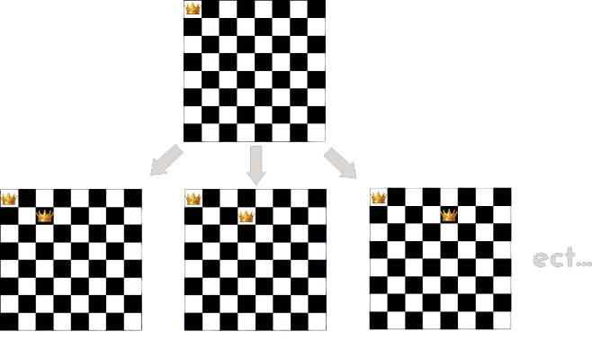

Dans ce projet universitaire en équipe, nous avons développé un algorithme trouvant la solution au problème des 8 dames.
Ce problème consiste à placer n dames sur un échiquier de nxn (8 dames sur un échiquier 8x8 par exemple), sans qu'aucune dame ne
menace les autres.
Le but de ce projet est de comparer différents algorithmes, ainsi le problème a été résolu avec plusieurs méthodes. De plus, l'une
des contraintes était de représenter le problème en utilisant un graphe.
Étapes
1.Représentation du problème
Comme dit précedemment, il nous fallait représenter le problème comme un graphe. Dans ce graphe, chaque noeud est un échiquier avec
une certaine quantité de dames déjà présentes dessus. Ses enfants sont les échiquiers que l'on obtiendrait en rajoutant une dame de
plus (sans menacer les dames déjà présentes).
Ainsi la racine de l'arbre est un arbre vide, et on retrouve au niveau le plus profond toutes les solutions possibles.

extrait d'un exemple de graphe
2.Développement
J'ai donc commencé par créer les différentes classes nécéssaires pour représenter un échiquier, un sommet de l'échiquier et un
graphe, ainsi que les méthodes associées (vérification de la validité d'un échiquier, ajout des enfants d'un sommet, remplissage
de l'arbre...).
Ont ensuite été développées trois algorithmes résolvant le problème. Le premier utilsait le graphe évoqué plus tôt, le second
était une algorithme de bruteforce passant par toutes les configurations d'échiquiers possibles pour ne retenir que les valides.
Enfin, le troisième était un algorithme de backtracking, auquel j'ai ajouté une interface graphique pour voir sa progression
en temps réel.
3.Analyse des résultats
En se basant sur le temps d'exécution des porgrammes dans différentes scénarios (recherche d'une seule solution, solution avec
la position de la première dame imposée, ensemble des solutions) pour des grilles de différentes tailles, on a pu comparer
l'efficacité des algorithmes.
Utiliser le graphe est la solution la plus flexible, car il suffit de créer l'arbre une seule fois (ce qui peut prendre un peu de temps)
pour ensuite parcourir toutes les solutions (presque instantané). À côté le backtracking est très efficace pour trouver une seule solution
, mais trop long sinon. Enfin, le temps d'exécution du bruteforce accroît exponentiellement avec la taille de la grille.
Acquis
Ce projet m'a beaucoup apporté, en tant que développeur mais aussi en tant que membre d'une équipe. En effet, j'avais la
responsabilité de développer les classes utilisées par mes camarades, il fallait donc adapter mon travail pour qu'il
adapté à leurs besoins et facile d'utilisation. Et évidemment, le développement m'a permis de mettre à l'épreuve ma capacité de
raisonnement et mes compétences en Python.